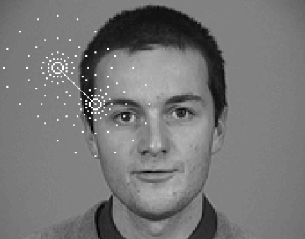
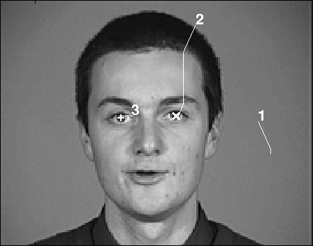
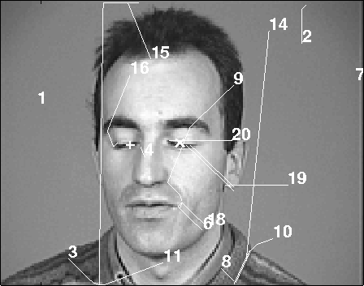

The
Saccadic Search strategy requires that an appearance-based model of the
pattern of interest be constructed in the same way as for the common GD
based algorithm. We will call such a model a pointwise model, since
it is constructed using a set of filters centred at the same image point.
In the case of Facial Features Detection we therefore extract a Gabor feature
vector at the location of the relevant facial features in the images of
the training set.
The
Saccadic Search strategy requires that an appearance-based model of the
pattern of interest be constructed in the same way as for the common GD
based algorithm. We will call such a model a pointwise model, since
it is constructed using a set of filters centred at the same image point.
In the case of Facial Features Detection we therefore extract a Gabor feature
vector at the location of the relevant facial features in the images of
the training set.
The example vectors for each facial feature are
complemented with negative examples picked at random and are used to train
a Support Vector Machine (SVM) classifier to recognize that feature. In
our experiments, we used three classifiers to detect the left eye, the
right eye and the mouth.
|  |
Detection of FeaturesThe search starts with the retina positioned at a random location in the image. Gabor feature vectors are extracted at all the retinal points and the classifier that had been trained on the target facial feature is used to rate all the possible locations. A saccade is then performed to centre the sampling retina on the point that gave the best match. Note that, since the density of sampling points increases towards the centre of the retina, the search automatically becomes finer. Saccades are terminated when a local maximum is reached. The candidate feature thus determined is further analysed by means of an extended model. |
|  | The two images shown here are examples
of saccadic patterns obtained when looking for the eyes of a person.
Numbers denote the places where saccades were started (saccadic patterns that do not appear to converge to any meaningful location are automatically abandoned). In this case, after a first unsuccessful attempt was abandoned (1), saccades converged to the subject's left eye (2). A saccade was then performed to the most probable position of the other eye, thus allowing its detection (3). |
| Information from the outline of the orbit makes eye detection possible the even in the case the subject's eyes are shut. |  |
Follow this link for more results on Eyes and Mouth Detection, or click here for the Saccadic Search Home Page.